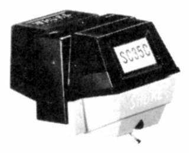
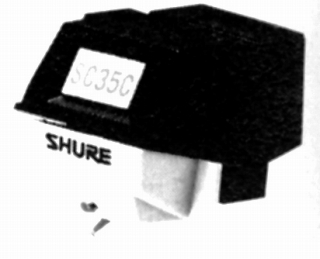
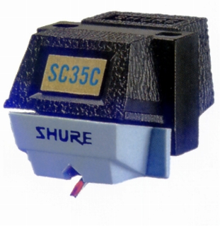

SC35C


■価格 13,800円
■発電方式 MM型
■出力電圧 5mV(5cm/sec
1kHz)
■針圧 4.0〜5.0g(最適 4.5g)
■再生周波数帯域
■チャンネルセパレーション 20dB(1kHz)
10db(10kHz)
■チャンネルバランス 2dB
■コンプライアンス
■負荷抵抗
47kΩ
■負荷容量
■インピーダンス
■針先 15μ
■自重 5.7g
■交換針 SS35C
■発売
1976〜77年
■販売終了 年頃
■備考 価格は1977年頃のもの
1979年頃には8,400円
1981年頃には9,100円 SS35C(3,200円)
1983年頃には10,000円
1985年頃にはSS35C(4,100円)
1987年頃には8,200円 SS35C(3,200円)
1995年頃にはSS35C(3,500円)
2000年頃にはSS35C(3,700円)
M44系のように途絶えたことがなく、 
現在もオープンプライスで販売が続いている。
(現行モデル）